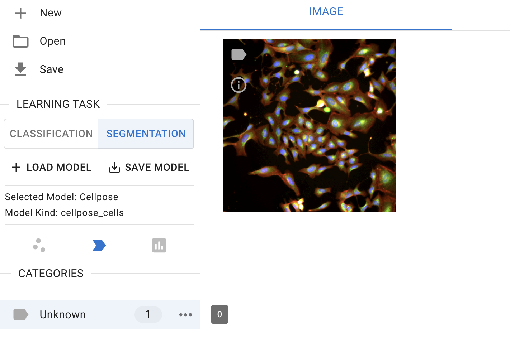

Segmentation#
Image Segmentation#
The image segmentation module allows researchers to quickly identify cells or nuclei by selecting pre-trained segmentation models. Users can choose a model from the available options and apply it to images that are opened and selected in Piximi for inference.
1. Load images#
To begin, loading the images from an example dataset included in Piximi by pressing 
Open in the top left. Select Image > example image > U2OS cell-painting experiment to get started. Alternatively, if you would like to load your own images, press 
Open image in the top right.
The images correspond to U2OS cells U2OS cells treated with an RNAi reagent (https://portals.broadinstitute.org/gpp/public/clone/details?cloneld=TRCN0000195467) and stained for a cell-painting experiment.
2. Load Models#
Currently, the annotator provides five pre-trained models, each designed for specific segmentation tasks:
Cellpose: A generalist algorithm for cellular segmentation and trained on fluorecence images
Stardistfluo: Trained on fluorecence images, ideal for identifying objects with star-convex shapes
StardistVHE: To identify nuclei in hematoxylin and eosin (H&E) stained image.
StardistFluo
COCO-SSD: To identify objects in “natural images” (or photographs) of 80 different classes (such as humans and kites) using the COCO format
GlandSegmentation: To segment intestinal glands trained on the Gland Segmentation in Colon Histology Images Challenge Contest (GlaS)29
In the ‘Learning task’ sub-menu on the left-hand side, click the ‘Segmentation’ button to switch the classification to cell segmentation.

Segmentation interface
Then, click the ‘+ Load Model’ button to select a model. Currently, only the pre-trained model is available for selection.

Segmentation model selection
Note: Cellpose is currently unique in that it runs on the AI4Life project’s BioEngine30 server while StarDist, like other Piximi models, runs client-only in the user’s own browser without data leaving their machine.
Stay tuned for ‘upload local’ and fetch ‘remote feaure’!
3. Run the model#
click on  ‘predict model’ to run the model you selected for the image selected for segmentation
‘predict model’ to run the model you selected for the image selected for segmentation
Model prediction
4. Segmentation output#
In this example, we use the Cellpose-Cell model to segment cells in the image. To view the segmented cells, switch the channels from ‘Image’ to ‘Cellpose-Cell’  at the top center of the interface.
at the top center of the interface.
 Examples of segmentation output
Examples of segmentation output
The outputs of the segmented objects can be used for downstream analysis, including annotations, measurements, and classifications.